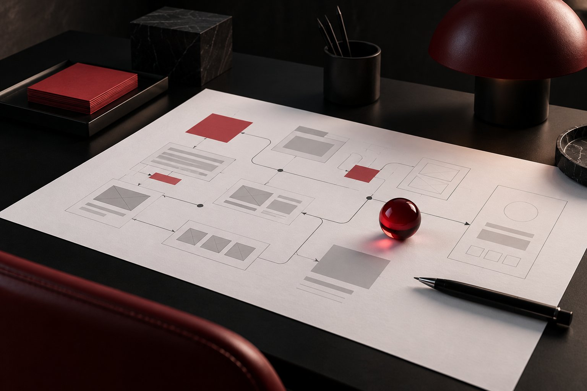

FEATURED · EDITORIAL DRAFT
Clarity is a competitive advantage
A clear point of view helps people understand what a business offers and why it matters.
Read articleTHE JOURNAL · EDITORIAL DRAFTS
Ideas on clearer strategy, purposeful design and the details that make digital work more useful.

A clear point of view helps people understand what a business offers and why it matters.
Read article
Small experience decisions can make digital journeys feel easier to follow.
Read article →Begin a project by understanding the change it needs to create.
Read article →
Consider what happens before, during and after the first interaction.
Read article →When a business can explain what it does, who it helps and why it matters, its digital presence has a stronger place to start. Clear language gives design and development a shared direction.
That clarity does not mean saying less for its own sake. It means making the useful parts easier to find, understand and act on.
Good interface design helps people understand where they are and what they can do next. A considered hierarchy, readable language and consistent interactions can make a complex service feel more approachable.
Start with the person using the experience. Then make each element earn its place.
A brief is more useful when it describes the outcome a business needs, the people it serves and the constraints the work should respect. Those answers help teams make choices that support the same purpose.
Begin with listening, agree on the problem and let the solution take shape from there.
A digital experience is more than the moment someone lands on a page. People discover, compare, decide and return in different ways. Useful content and dependable interactions should support that wider journey.
Look at each step as part of one relationship, then keep learning from how people use it.